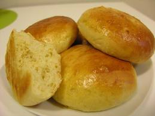

Welcome to Recetas De Bollos
Bollos Fritos de Verano - El Gourmet
2021.06.18 21:41Ahora Postres caseros con Mauricio 17:00| Pastelería de Fiesta 17:30| Los Petersen - Pastas y Pizzas 18:00| Los Favoritos de Gross 18:30| Food Safari Italia RECETAS En TV programas chefs noticias
Receta de Bollos Fritos de Verano
Repostería con Virginia Sar III por Virginia Sar
Si te gusta, compártelo > 3 Tazas Canela c/n Huevos 2 Unidades Azúcar 6 y 1/2 cdas. Mantequilla pomada 6 cdas Leche tibia 2 y 1/2 Tazas Sal 1/2 cdita Levadura en polvo 2 y 1/2 cditas.Paso a Paso
En un bol mezclar 3 tazas de harina , 2 ½ cucharaditas de levadura seca, 6 ½ cucharadas de azúcar y reservar. En otro bol mezclar 2 huevos, 2 ½ tazas de leche tibia, 6 cucharadas de mantequilla pomada y agregarlo en el centro del bol reservado con los secos con ½ cucharadita de azúcar. Con ayuda de un cornet trabajar de afuera hacia adentro hasta que comience a integrarse. En ese punto trabajar con las manos hasta formar un bollo liso. Dejarlo descansar en un bol tapado con papel film hasta que haya duplicado su volumen. Volcar la masa levada en la mesada, trabajar con las manos suavemente por unos minutos hasta volver a formar bollo uniforme. Cortar porciones con pequeñas con cornet y formar bolitas de 2 centímetros aproximadamente. Freír en aceite caliente hasta dorar . Secar sobre papel absorbente y pasarlos por azúcar con canela molida. RECETAS / EN TV / PROGRAMAS / TALENTOS / NOTICIAS / ANUNCIE /El Gourmet© 2021 - Todos los derechos reservados
Aviso Legal | Política de cookies - Términos y condiciones
